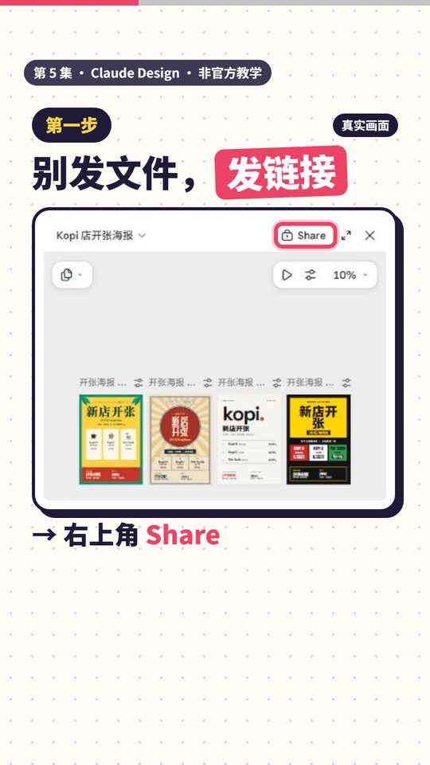
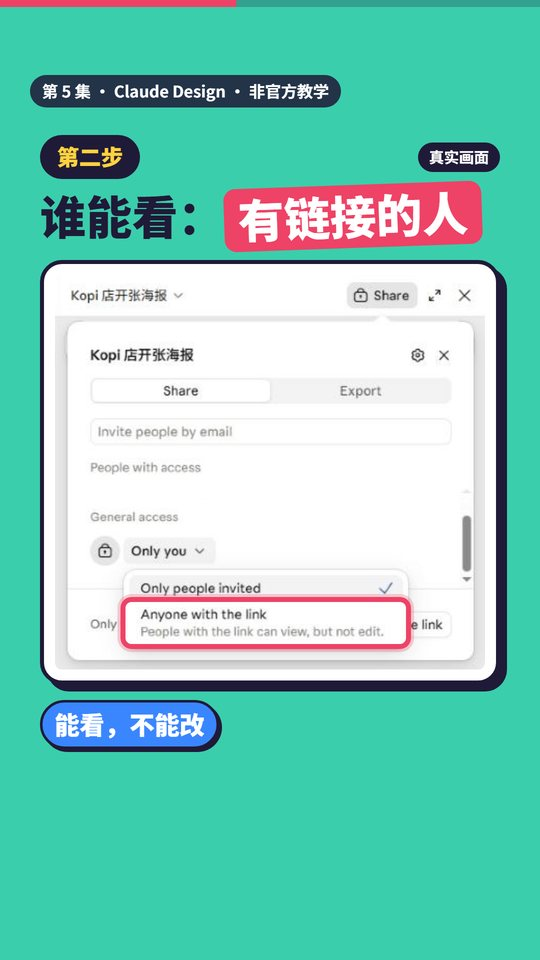
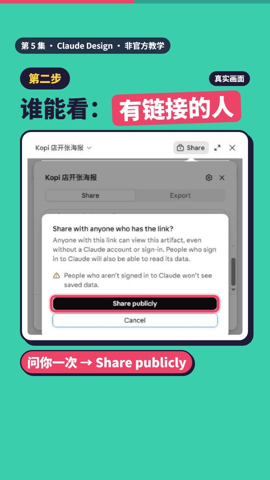
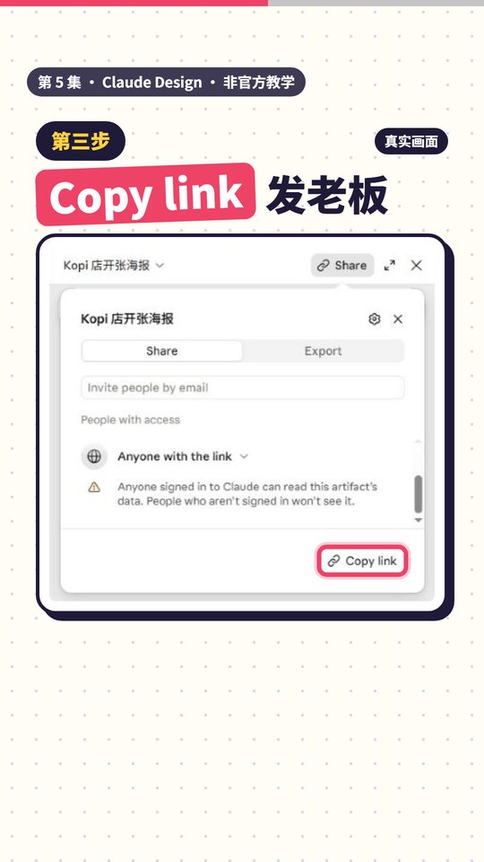
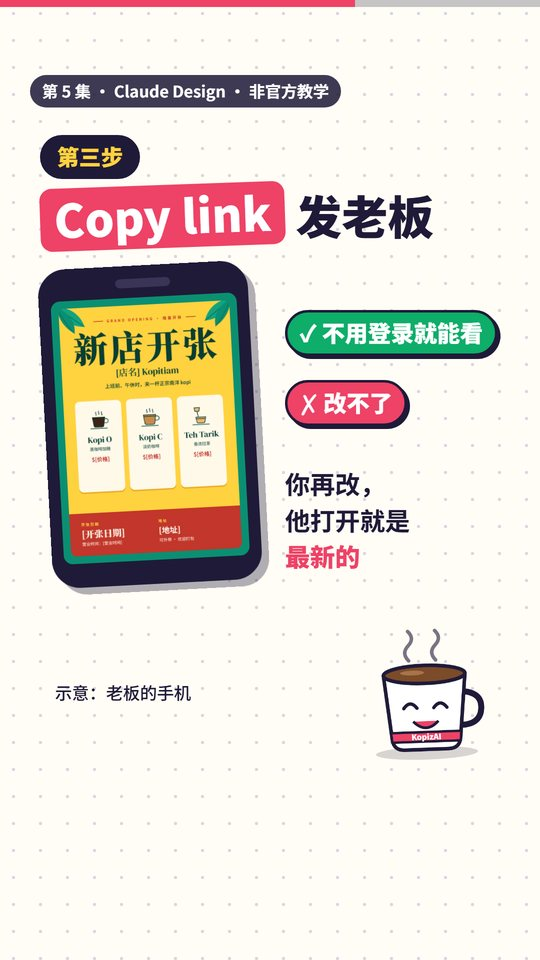
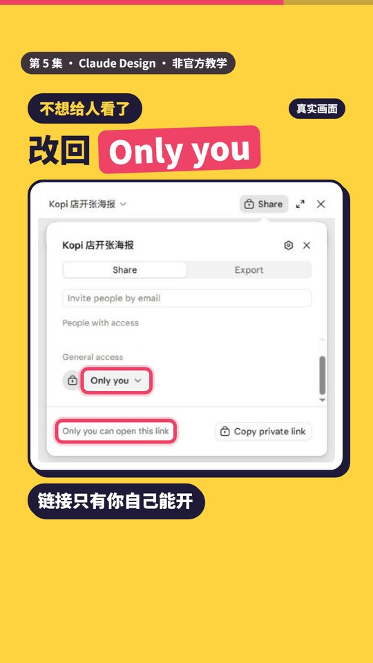
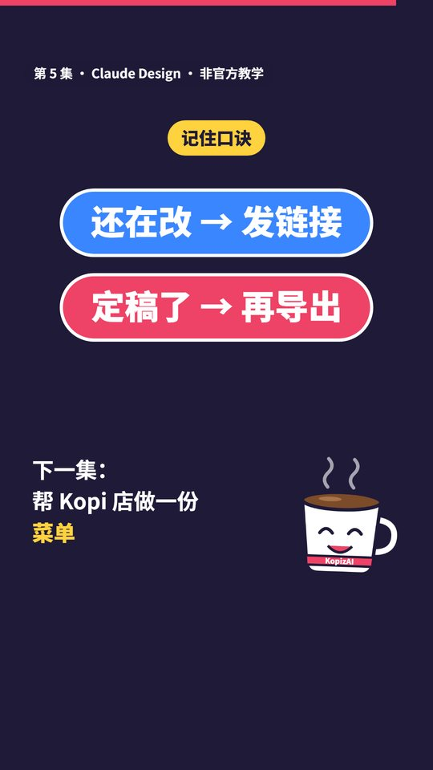

第 5 集 · 把设计分享给别人一起看
一句话： 还在改，发链接；定稿了，再导出。右上角 Share，把 Only you 改成 Anyone with the link，再 Copy link。
对照官方文档和真实界面核对日期：2026-11-12 ｜ 时长 39 秒 ｜ 非官方教学
跟着做
第一步：别发文件，点右上角 Share（视频 00:09）
在设计画布的右上角点 Share，面板停在 Share 分页（不是上一集的 Export）。

第二步：谁能看，改成 Anyone with the link（视频 00:13）
面板下方 General access 一开始是 Only you。点它，选 Anyone with the link，菜单上写着：有链接的人能看，不能改。
它会弹出确认框 "Share with anyone who has the link?"，说明有链接的人不用 Claude 账号、不用登录就能看。确定要分享，就点 Share publicly。


第三步：Copy link，发给老板（视频 00:20）
改好之后，右下角的按钮变成 Copy link。复制，贴到 WhatsApp 发给老板。
对方能看，但改不了。你之后再改，他打开链接看到的就是最新的那一版，不用再一版一版发文件。（这一点来自 Export 分页里的说明："they will always have the latest changes"。）


老板手机那张是示意图，不是真实画面。
不想给人看了：改回 Only you（视频 00:27）
同一个地方，把 Anyone with the link 改回 Only you（菜单里叫 Only people invited）。底下会写 "Only you can open this link"，链接就只有你自己能开。

口诀
还在改，发链接；定稿了，再导出。
（导出 PNG、PDF 的做法见第 4 集。）

时间点
| 时间 | 内容 |
|---|---|
| 00:00 | 海报改了三版，老板还在看第一版 |
| 00:03 | 群里全是"最终版" |
| 00:09 | 别发文件，点右上角 Share |
| 00:13 | Only you → Anyone with the link → Share publicly |
| 00:20 | Copy link 发给老板：能看、改不了、永远是最新的 |
| 00:27 | 不想给人看了，改回 Only you |
| 00:31 | 口诀，下一集预告 |
顺便知道
- 免费版、Pro、Max 只有两种：Only you（只有自己）和 Anyone with the link（有链接的人都能看）。Pro 以上还能在顶上 "Invite people by email" 用邮件邀请特定的人（官方写的是测试版）。
- Team、Enterprise 方案可以只分享给公司里的人；Anyone with the link 要管理员开了对外分享才会出现。
- 被邀请的人可以给不同权限：只能看、能留言、能编辑。公开链接只能看。
- 手机 App 里改不了分享设置，要用网页版或电脑版。
来源：Claude 帮助中心《Get started with Claude Design》《Share artifacts》，以及 2026 年 11 月 claude.ai 的实际界面 https://support.claude.com/en/articles/14604416-get-started-with-claude-design https://support.claude.com/en/articles/9547008